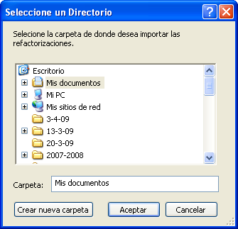
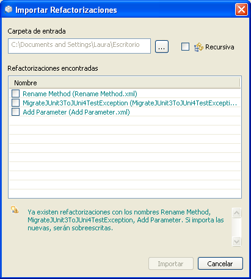
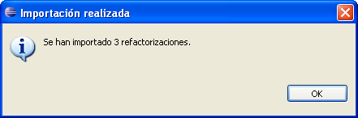

Importar RefactorizacionesImportar Refactorizaciones
Importar RefactorizacionesImportar RefactorizacionesEn esta secci�n aprender� c�mo importar refactorizaciones din�micas existentes desde una instalaci�n de Eclipse con el Plugin De Refactorizaci�n Din�mica.
(...) para seleccionar el directorio desde el que se
importar�n los ficheros de las refactorizaciones.
El plugin iniciar� una b�squeda recursiva dentro del directorio especificado en busca de ficheros
v�lidos de refactorizaciones. Para que la b�squeda sea m�s r�pida, seleccione exactamente el directorio bajo
el que se encuentran las carpetas con las refactorizaciones que quiere importar. Si la casilla Recursiva
est� activada, la b�squeda se llevar� a cabo de forma recursiva a trav�s de todos los directorios
contenidos en la carpeta de entrada seleccionada. Esta operaci�n podr�a ser bastante larga para carpetas muy
profundas o con muchos elementos, as� que aseg�rese de desmarcar esta opci�n si no desea que la b�squeda sea
recursiva.

Seleccione el directorio de entrada
Seleccione las refactorizaciones que desea importar.

Seleccione las refactorizaciones
Importar, aparecer� un mensaje de confirmaci�n notific�ndole del
n�mero de refactorizaciones que fueron finalmente importadas.
Podr� encontrar las nuevas refactorizaciones dentro de cualquiera de las opciones del Plugin de Refactorizaci�n Din�mica.

Confirmaci�n